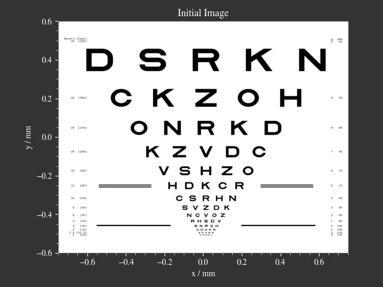
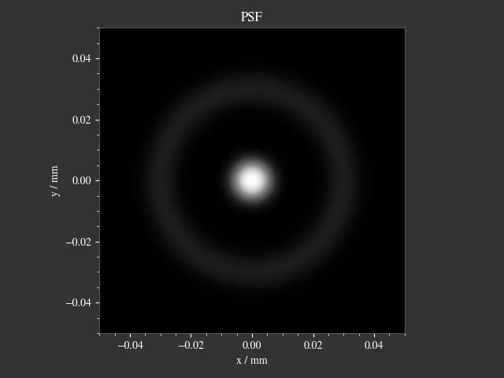
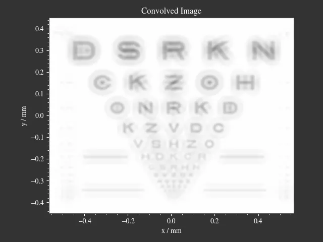
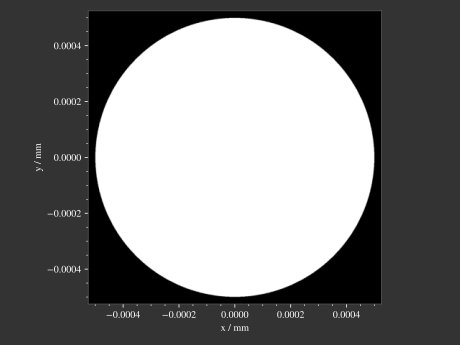
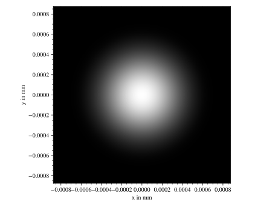
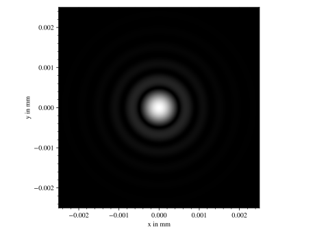
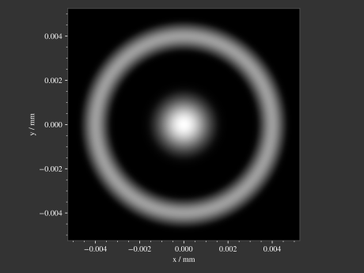
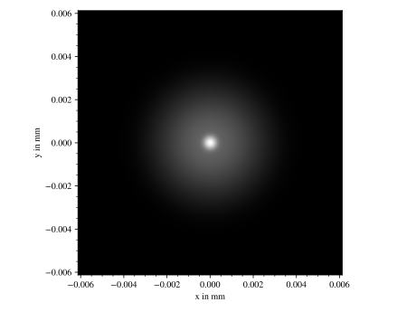

4.11. PSF Convolution#
4.11.1. Overview#
Convolution can speed up image formation significantly by parallelizing the effect of a PSF (point spread function) for every object point. This results in a nearly noise-free image in a small fraction of the time normally required. A PSF is nothing different than the impulse response of the optical system for the given object and image distance combination. It changes spatially, but for a small angular range it can be assumed constant. However this also implies that many aberration can’t be simulated this way (astigmatism, coma, vignette, distortion, …). In cases where convolution would be viable a possible approach would be to render a PSF and then apply the PSF to an object using the convolution functionality in optrace.
The convolution approach requires:
the PSF
the object image to convolve
PSF size
object size
the system’s magnification factor
Both colored objects and PSFs are supported. Note however, that without knowing the correct spectral distribution on both (instead only the values in a color space) the convolution only simulates one of many possible solutions. See the details in section Section 5.5.2.
4.11.2. Usage#
Simple Calls
A simple call to convolve required the object and PSF, as well as the magnification factor.
The object should be either of type RGBImage or LinearImage, while the PSF should be either LinearImage or RenderImage.
For more details on image classes see Section 4.8.1.
Colored PSFs can be only used with class RenderImage, as all human visible colors are required for convolution.
The image objects include the information about their size and position.
This magnification factor is equivalent the magnification factor known from geometrical optics. Therefore \(\lvert m \rvert > 1\) means a magnification and \(\lvert m\rvert < 1\) an image shrinking. \(m > 0\) is an upright image, while \(m < 0\) correspond to a flipped image.
Let’s define a predefined a image and PSF:
img = ot.presets.image.ETDRS_chart_inverted([0.5, 0.5])
psf = ot.presets.psf.halo()
You can then call convolve in the following way:
img2 = ot.convolve(img, psf, m=0.5)
The function returns the convolved image object img2.
When img and psf are of type LinearImage, img2 is also a LinearImage.
For all other cases color information is generated and img2 is a RGBImage.
Slicing and Padding
While doing a convolution, the output image grows in size by half the PSF size in each direction.
By providing keep_size=True the padded data can be neglected for the resulting image.
img2 = ot.convolve(img, psf, m=0.5, keep_size=True)
The convolution operation requires the data outside of the image. By default, the image is padded with zeros before convolution.
Other modes are also available. For instance, padding with white is done in the following fashion:
img2 = ot.convolve(img, psf, m=0.5, keep_size=True, padding_mode="constant", padding_value=[1, 1, 1])
padding_value specifies the values used for constant padding for each channel.
Depending on type of img, it needs to have three or only one element.
To reduce boundary effects, edge padding is a viable choice:
img2 = ot.convolve(img, psf, m=0.5, keep_size=True, padding_mode="edge")
Color conversion
The convolution of colored images can produce colors outside of the sRGB gamut.
To allow for a correct mapping into the gamut, conversion arguments can be provided by the cargs argument.
By default it is set to dict(rendering_intent="Absolute", normalize=True, clip=True, L_th=0, chroma_scale=None).
Provide a cargs dictionary to override this setting.
img2 = ot.convolve(img, psf, m=0.5, keep_size=True, padding_mode="edge", cargs=dict(rendering_intent="Perceptual"))
The above command overrides the rendering_intent while leaving the other default options unchanged.
Normalization
When convolving two LinearImage objects it is recommended to normalize the PSF integral to 1.
Doing so, the overall power of the image is preserved.
4.11.3. Restrictions#
it is not possible to convolve two
RGBImageor twoRenderImageimage and PSF resolutions must be between 50x50 pixels and 4 megapixels
the PSF needs to be twice as large as the image scaled with the magnification factor
when convolving two colored images, the resulting image is only one possible solution of many
scipy.signal.fftconvolve()is involved, so small numerical errors in dark image regions can appearconvolution of sphere projected images (see Section 4.8.6) is prohibited, as distances are non-linear
4.11.4. Examples#
Image Example
 |
 |
{kind=link}
{kind=link}
{kind=link}

Code Example
The following example loads an image preset and convolves it with a square PSF created as a numpy array.
import numpy as np
# load image preset
img = ot.presets.image.ETDRS_chart_inverted([0.9, 0.9])
# square psf
psf_data = np.zeros((200, 200))
psf_data[50:150, 50:150] = 1
psf = ot.LinearImage(psf_data, [0.1, 0.08])
# convolution
img2 = ot.convolve(img, psf, m=-1.75)
4.11.5. Presets#
The are multiple PSF presets available.
All presets are normalized such that the integral image sum equals 1.
Circle
A circular PSF is defined with the d circle parameter.
psf = ot.presets.psf.circle(d=3.5)
Gaussian
A simple Gaussian intensity distribution is described as:
The shape parameter sig defines the Gaussian’s standard deviation:
psf = ot.presets.psf.gaussian(sig=2.0)
Airy
The Airy function is:
Where \(J_1\) is the Bessel function of the first kind of order 1.
The resolution limit r is described as distance from the center to the first root.
psf = ot.presets.psf.airy(r=2.0)
Glare
A glare is modelled as two different Gaussians, a broad and a narrow one Parameter \(a\) describes the relative intensity of the larger one.
psf = ot.presets.psf.glare(sig1=2.0, sig2=3.5, a=0.05)
Halo
A halo is modelled as a central Gaussian and annular Gaussian function around \(r\). \(\sigma_1, \sigma_2\) describe the standard deviations of both. \(a\) describes the intensity of the ring.
psf = ot.presets.psf.halo(sig1=0.5, sig2=0.25, r=3.5, a=0.05)
4.11.6. Preset Gallery#
 Fig. 4.55 Exemplary Circle PSF.# |
 Fig. 4.56 Exemplary Gaussian PSF.# |
 Fig. 4.57 Exemplary Airy PSF.# |
 Fig. 4.58 Exemplary Halo PSF.# |
 Fig. 4.59 Exemplary Glare PSF.# |
{kind=link}
{kind=link}
{kind=link}
{kind=link}
{kind=link}